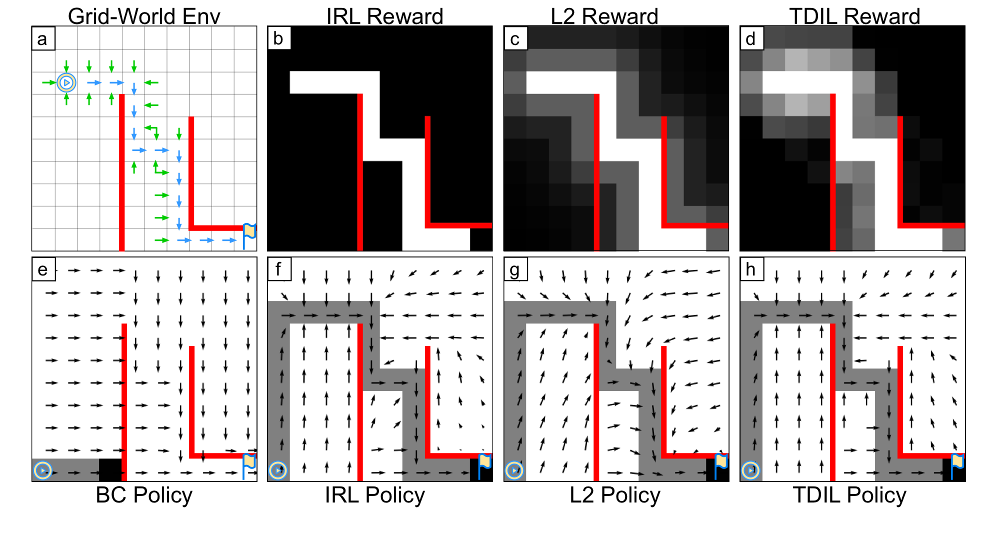
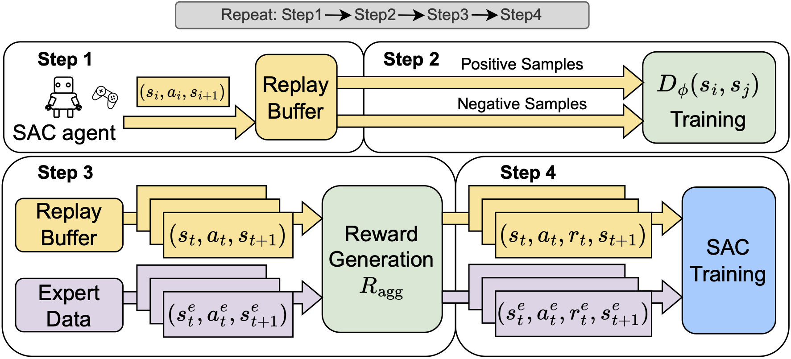
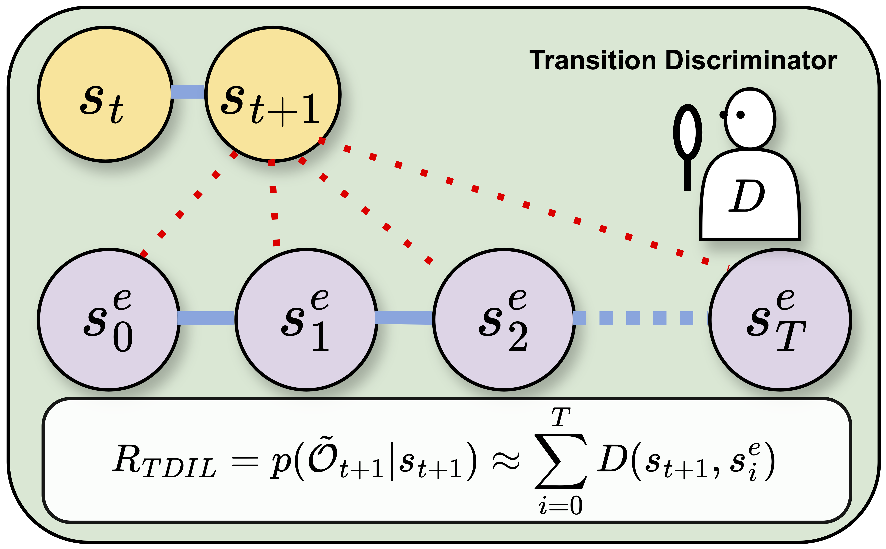
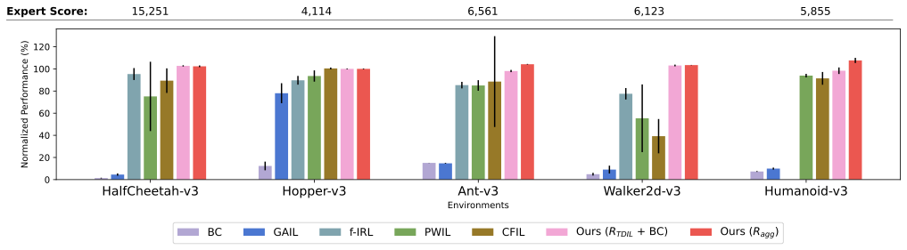

Single-demonstration imitation learning is brutal: one expert trajectory, zero access to the ground-truth reward, and the agent starts from randomly sampled initial states. Standard IL methods collapse—too sparse, too brittle, no guidance once the agent steps off the expert path.
TDIL (Transition Discriminator-based Imitation Learning) introduces a dense, dynamics-aware surrogate reward built around expert proximity rather than geometric distance or adversarial distribution matching. Instead of asking "how close are these states in L2?", TDIL asks the only question that matters in an MDP:
"Can the agent reasonably transition back toward the expert support?"
This shift produces stronger generalization, faster convergence, and state-of-the-art performance across MuJoCo and Adroit Door, even with only one demonstration.
The core problem in single-demo IL is reward sparsity. Basic IRL only rewards expert state-action pairs; everything else is an uninformative void. Geometric distance-based methods (e.g., PWIL, FISH) pretend the environment is Euclidean—even when transitions are asymmetric or blocked.
TDIL solves this by defining expert proximity:
The result is a reward landscape that is both dense and aligned with actual reachability—not naïve geometric closeness.
To illustrate the effectiveness of our approach, we present a comparative analysis using a simple grid-world navigation task. The comparison below demonstrates how different imitation learning methods perform in terms of reward signal distribution and convergence speed when learning from a single expert demonstration.

Figure 1: Comparative analysis of different IL methods in a grid-world environment. (a) The expert's demonstration trajectory is shown with blue arrows, while red lines represent impassable obstacles. Green arrows indicate state-action pairs that lead directly toward expert states. (b)-(d) Reward signals computed by various methods, highlighting the differences in reward density and spatial distribution. (e)-(h) The learned policies' action selections, demonstrating how different reward formulations affect the resulting behavior.
TDIL trains a discriminator \(D(s_i, s_j)\) that predicts whether \(s_i\) can transition to \(s_j\) in a single timestep.
This provides a powerful model of one-step reachability.
For each next-state \(s_{t+1}\) sampled from the agent's replay buffer during the Soft Actor-Critic (SAC) training, TDIL checks whether it can reach any expert state.
The surrogate reward:
\(R_{\text{TDIL}}(s_t, a_t) = \mathbb{E}_{s_{t+1}}[p(\tilde{O} \mid s_{t+1})]\)
is approximated via the transition discriminator:
\(R_{\text{TDIL}} \approx \sum_i D(s_{t+1}, s_i^{\text{expert}})\)
This gives dense, meaningful reward everywhere the agent might explore.
Combine IRL reward and TDIL surrogate reward:
\(R_{\text{agg}} = \alpha R_{\text{IRL}} + (1-\alpha) R_{\text{TDIL}}\)
A Soft Actor-Critic (SAC) agent is trained using the aggregated reward.
The discriminator and RL agent train simultaneously, enabling stable reward shaping as the agent explores the environment.
Figure 2 presents an overview of the proposed TDIL algorithm, which involves repeating the following four steps. First, the agent interacts with the environment and stores the collected transitions in the replay buffer. These transitions are then utilized to update the transition discriminator with binary cross entropy loss in the second step. In the third step, a batch of transitions is sampled from the replay buffer to calculate the aggregated reward \(R_{\text{agg}}\), which is defined as the following:
$$ R_{\text{agg}}(s_t,a_t) \stackrel{\mathrm{def}}{=} \beta R_{\text{IRL}}(s_t,a_t) + (1-\beta) R_{\text{TDIL}}(s_t,a_t) $$

Figure 2: Framework of TDIL
Figure 3: \(R_{\text{TDIL}}\) generating process
The Transition Discriminator gains awareness of the environment's dynamics through contrastive learning on data collected directly from the environment. Unlike geometric distance metrics, it evaluates proximity based on actual transition feasibility.
IRL rewards typically assign signals only to expert state-action pairs, which form a manifold of negligible volume in high-dimensional space. In contrast, our TDIL reward extends to all states within the expert's proximity (one-step reachability). The union of these proximal states creates a volume with non-zero measure, significantly increasing the chance for the exploring agent to encounter reward signals.
Furthermore, the transition discriminator is trained in a stable, non-adversarial manner. This avoids the instability and "reward vanishing" issues common in min-max adversarial methods (like GAIL) when the agent's policy begins to resemble the expert's behavior.

Figure 4: Performance comparison on MuJoCo benchmarks. The results show normalized performance relative to expert demonstrations across all tested environments.
IL often lacks the ground-truth reward, making checkpoint selection guesswork.
TDIL introduces relative TDIL return:
\(\frac{\sum_t R_{\text{TDIL}}(s_t)}{\sum_i R_{\text{TDIL}}(s_i^{\text{expert}})}\)
This normalized metric:
Practically: you get a reward-free model selection mechanism.
TDIL adapts to single-demo IL constraints rather than fighting against them.
@inproceedings{chiangexpert,
title={Expert Proximity as Surrogate Rewards for Single Demonstration Imitation Learning},
author={Chiang, Chia-Cheng and Lan, Li-Cheng and Sun, Wei-Fang and Feng, Chien and Hsieh, Cho-Jui and Lee, Chun-Yi},
booktitle={Forty-first International Conference on Machine Learning},
year={2024}
}